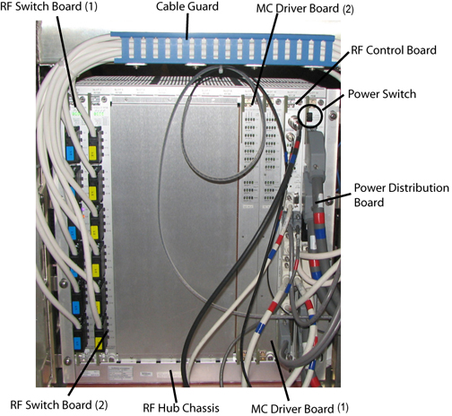
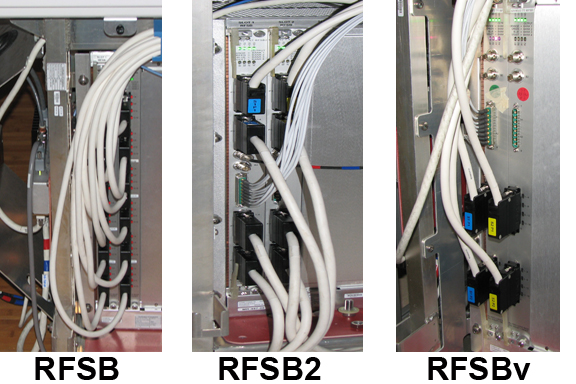

- 00000018WIA30FD0130GYZ
- id_123749291.20
- May 16, 2025 4:50:09 PM
RF hub boards and chassis replacement
Removal and installation instructions for replacing the RF hub boards and chassis.
Prerequisites
| Personnel requirements | |||
|---|---|---|---|
| Required persons | Preliminary requirements | Procedure | Finalization |
| 1 to 2 | - | 60 to 120 minutes | - |
| Tools and test equipment | |||
|---|---|---|---|
| Item | Quantity | Part number | Manufacturer |
| Nonmagnetic Titanium Service Tool Kit, Large Set | 1 | 5112581 | - |
| Replacement parts | |||
|---|---|---|---|
| Item | Quantity | Part number | Manufacturer |
| RF Switch Board (RFSB, RFSB2, or RFSBv) | 1 to 2 | See RF hub | - |
| MC Driver Board (MCDB) | 1 to 2 | See RF hub | - |
| RF Control Board (RFCB) | 1 | See RF hub | - |
| Power Distribution Board (PDBv or ePDB) | 1 | See RF hub | - |
| SRPS J50 Dongle | 1 | 5172838-2 | - |
| RF Hub Chassis | 1 | See RF hub | - |
| Required conditions |
|---|
|
Do LOTO on the power distribution unit (PDU). See Applying LOTO - PGR Power Distribution Unit (PDU)/Gradient Subsystem. |
| Safety | ||||
|---|---|---|---|---|
|
Before working in any GE HealthCare MR suite or doing any GE HealthCare service procedure, you must:
If you have any safety concerns at any time, do not begin work or immediately stop work and move to a safe location. Immediately contact your supervisor or site safety officer for instructions on how to proceed. | ||||
| ||||
About this task
When returning RF hub boards, use the original FRU packaging.
This document includes replacement procedures for:
- RF switch board (RFSB) RF switch board
- Multicoil driver board (MCDB) MC driver board
- RF control board (RFCB) RF control board
- Power distribution board (PDB) Power Distribution Board
- RF hub chassis RF hub chassis

RF switch board
About this task
Multiple versions of the RF boards have been used, but the location in the RF hub chassis and the replacement procedures are the same.

Removing RF switch board
About this task
| Notice | |
|---|---|
Procedure
Installing RF switch board
Procedure
MC driver board
Removing MC driver board
Procedure
Installing MC driver board
Procedure
RF control board
Removing RF control board
Procedure
Installing RF control board
Procedure
Power Distribution Board
Removing the Power Distribution Board (PDB, PDBv, or ePDB)
Procedure
Installing the Power Distribution Board (PDB, PDBv, or ePDB)
About this task
- For systems with a PDB (5250082), see Installing the PDBv and J50 dongle in place of the PDB.
- For all other replacements, see Installing the PDB, PDBv, or ePDB.
Installing the PDBv and J50 dongle in place of the PDB
Procedure
Installing the PDB, PDBv, or ePDB
Procedure
RF hub chassis
Removing RF hub chassis
Procedure
Installing RF hub chassis
Procedure
Finalization
Procedure
- Turn on the power switch on the PDB.
- Replace the side covers on the rear pedestal.
- Remove LOTO. See Removing LOTO - PGR Power Distribution Unit (PDU)/Gradient Subsystem.
- Perform a TPS reset.